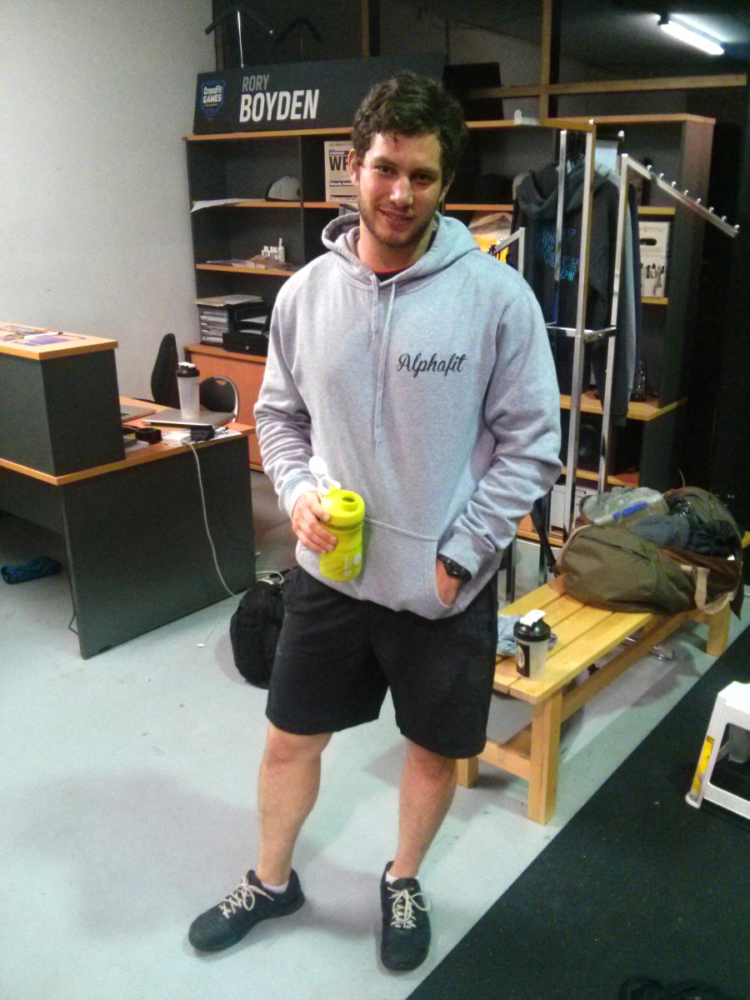

- workshirt
- Stanley philips screwdriver for adjusting the speedrope and piercing fresh coconuts.
- Shoes
- Car keys, house keys and keys for the two gyms.
- Voodoo floss
- Voodoo floss bands to show the girls how vascular my arms are when its applied.
- Tape
- Voodoo floss bands to show the girls how vascular my arms are when its applied.
- Sunnies
- Adidas Adipower Weightlifting shoes they are exuberant, comfortable, sexy because it's red, and keeps my feet stable for squat movements. It helped immensely to reach my 150kg back squat goal recently.
- Telstra 4g thing
- For mixing pre and post workout..minus the metal mixing ball because someone in the gym has pinched it.
- iPhone
- Klean Kanteen 800ml, probably the most expensive water bottle at $30. Its BPA free, lifetime warranty, leak proof and no funny after taste like you get from plastic water bottles.
- Whistle
- Rocktape 7mm, good for heavy squatting and keeping your patella intact
- Bag
- Rehband 5mm, good for metcons
- iPhone Charger
- Pinched them from Bec, they're adidas and they smell nice
- bottle
- I mix it with creatine as a pre workout taste delicious
- Deoderant
- Ben gave me this while judging in the Open, great thumb exercise.
- http://www.roguefitness.com/spealler-speed-ropes
- Had this Country Road wallet for almost four years its coming apart and its still empty
- lipbalm
- Illegal contents
- pills
- Backup snack
- keys
- Backup snack
- The Boys in the Boat
- Backup undies a bargain from kmart five for $12
- Jumper
- Three servings of chocolate protein powder..be up shit creek if the bag breaks
- Tracksuit
- There's voltaren, strapping tapes, hand grips, callus shaver, nail clippers and scissors
- Work trousers
- Perfect size for my small hands and it has a blue handle
- What are you wearing right now?
- I am currently wearing my mums Rogue top, I’m really lucky to be able to fit into some of her clothes. I don't often train in trackies but it was extremely cold and I didn’t want to get frostbites. I always wear my pink Nano 3.0’s, for me personally they are extremely comfortable.
- How long have you been doing crossfit?
- I only came once a week during October – December 2013, with no sporting background I came to the conclusion that if I didn’t start training frequently I'd get fat so then I started coming more often around January this year.
- What gym do you go to?
- Crossfit Creature
- What's next on your kit shopping list?
- I would love to get the Teal Nano 4.0’s and some new Lululemon shorts. Only if mum buys it for me of course!
- What do you do as a job?
- I don’t work, but I’m currently in high school (year 11)
- Competition history
- I went in an individual teen comp around 8 months ago, I enjoyed it but I got mad/frustrated when the girl I tied first place with didn’t even get a no rep for her terrible above parallel squat.
- What bit of kit would you use, even if you were sponsored by their competitor?
- I’m not attached to anything that badly, but if my Nike Romaleos were in my bag at the time I would definitely still use them!
